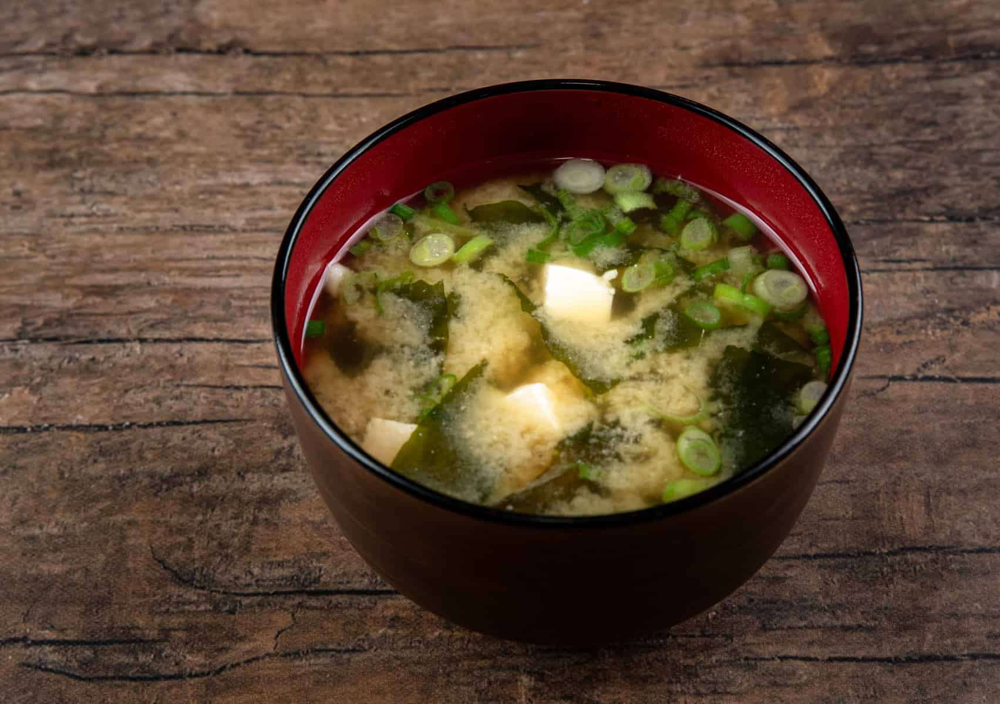

Miso Soup

Description
Miso soup is a Japanese staple. It can be enjoyed at any time of the
day, but it is commonly served at breakfast time. It is super simple to
make and tastes great!
Ingredients
- 2 tsp dashi powder
- 4 cups water
- 3 tbsp miso paste
- 8 oz tofu, diced
- 2 green onions, diced
Steps
- Bring a medium pot with 4 cups of water and dashi powder to a
boil.
- Reduce the heat to medium. Dissolve miso paste into the broth by
whisking it on a ladle or large spoon.
- Once the miso paste has dissolved into the broth, add the tofu.
Gently stir so as to not break the tofu.
- Add green onion. Let simmer for 2 minutes.
- Enjoy!